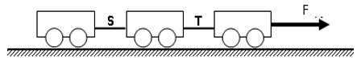

1. Menjelang pukul 16.00 perhitungan suara di empat tempat pemungutan suara selesai, kemudian dibuatkan berita acara. Pak Camat mengumumkan hasilnya. Maskuri, yang bertanda gambar padi, memperoleh 884 suara, disusul Sugino bertanda gambar ketela 415 suara, dan Sugiono bertanda gambar jagung 342 suara. Suara tidak sah 33.
Kesimpulan isi berita pada paragraf di atas adalah ….
2. Bacalah kedua kutipan cerita berikut!
Kutipan I
Teman-teman Hendra tiba-tiba bersorak gembira. Tapi, tidak jauh dari mereka terlihat Roni yang terkulai lemas karena layang-layangnya putus. Padahal, Roni sudah menggunakan berbagai strategi untuk memenangkan permainan layang-layangnya melawan Hendra, tetapi kali ini ia tidak berhasil. Tidak lama senja pun tiba. Ketika terdengar suara azan, anak-anak membubarkan diri untuk pergi ke masjid. Berita kemenangan Hendra atas Roni semakin menambah keyakinan anak-anak desa itu bahwa layang-layang milik Hendra memang sakti.
Kutipan II
Sudah sekitar sebulan Ersa pindah ke rumah barunya. Rumah tersebut hasil jerih payahnya yang ia tabung selama lima belas tahun lalu. Kerja kerasnya tersebut membuahkan hasil. Sebuah rumah dengan desain layaknya istana dalam dongeng. Selain itu, banyak mobil mewahnya yang menghiasi garasi di rumahnya. Kini, Ersa dapat menikmati hasil dari kesabarannya dalam menabung untuk masa depan.
Perbedaan pola penggunaan bahasa pada kedua kutipan teks cerita pendek tersebut adalah ...
3. Bacalah dua kutipan teks berita berikut!
Teks Berita I
Semburan lava dan bebatuan pijar Gunung Anak Krakatau (GAK) di perairan Selat Sunda, Provinsi Lampung, meluas ke daerah sekitarnya. Bencana gunung meletus ini terjadi Rabu dini hari. Petugas pengamatan di Pos Desa Pasuruan, Kecamatan Cinangka, Kabupaten Serang, menuturkan dengan rinci. Sekitar pukul 06.00 WIB telah terjadi letusan dengan diawali kegempaan vulkanik A (dalam) sebanyak 3 kali, disusul vulkanik B (dangkal) 30 kali, dan gempa embusan sebanyak 25 kali.
Teks Berita II
Gunung Kelud mungkin akan terus diguncang gempa embusan. Bahkan, hingga Rabu, 14/11/2008 letusan itu masih terjadi. Gempa embusan telah menghasilkan asap setinggi 2.500 meter. Data dari pos pengamatan Gunung Api Kelud di Dusun Margomulyo, Desa Sugihwaras, Kecamatan Ngancar, Kabupaten Kediri Jawa Timur hingga Selasa 13/11 telah tercatat 203 kali gempa embusan dengan amplitude antara tiga hingga 33 milimeter.
Perbedaan urutan penyajian kedua teks berita tersebut adalah ....
4. Keesokan harinya, betapa terkejutnya Sabir melihat onggokan onderdil sepedanya sudah lenyap dari tempatnya. Padahal hari itu dia sudah ada janji dengan Pak Wahid untuk membeli kelengkapan onderdil darinya. Dengan langkah mantap didekatinya teman-temannya di ruang makan.
“Saya tahu siapa di antara kalian yang mengambil onderdil sepeda saya. Mungkin satu atau dua di antara kalian,” ucap Sabir sambil menatap Diki dan Bondan, “saya tidak mengancam, tetapi saya kira setiap orang mempunyai kewajiban mempertahankan haknya. Onderdil sepeda itu hak milik saya. Kalau sampai besok pagi tidak kembali tahu apa akibatnya.” Diki dan Bondan tampak pucat wajahnya.
Konflik kutipan cerpen tersebut adalah ....
5. (1) Ya Tuhan. Airin terbelalak. “Kamu tak pernah cerita dalam surat.” (2) “Aku tak ingin kehilangan sahabat, Airin. Banyak yang menghentikan surat mereka, ketika tahu aku lumpuh.” (3)“Mana mungkin aku begitu...!” Mata Airin terasa panas oleh gumpalan air yang mendesak keluar. (4)Ia terharu melihat keadaan Dayu, sementara semangatnya tetap berkobar walaupun dengan kondisi seperti itu. (5) “Aku tetap sahabatmu, Dayu. Bahkan aku akan tambah sayang padamu setelah bertemu.” (Kurnia Effendi, Menunggu Matahari Padam)
Bukti bahwa watak tokoh Airin pada kutipan cerpen tersebut penyayang terletak pada kalimat bernomor .…
6. Bacalah teks berikut!
Sepak terjang tokoh Tan Peng Liang berani cerdas dan kadang seperti jagoan dalam film-film koboi. Banyak tokoh yang terlibat berkaitan satu dengan yang lain. Lukisan tentang kebiadaban tentara Jepang dalam mempermalukan perempuan Indonesia yang dijadikan jugun ianfu dapat membuat pembaca geram. Sebagai bahan bacaan dan hiburan, novel Cha Bau Khan, enak di baca.
Keunggulan novel Cha Bau Khan sesuai teks tersebut adalah …
7. Bacalah teks berikut!
Setelah proses pemijahan selesai, segera angkat induk dari kolam pemijahan ikan lele. Hal ini untuk menghindari telur disantap oleh induk ikan karena setelah memijah induk ikan betina akan merasa lapar. Selanjutnya telur yang telah dibuahi ditetaskan. Penetasan bisa dilakukan di kolam pemijahan atau pun di tempat lain seperti akuarium, fiberglass atau kolam terpal. [...]
Kalimat yang tepat untuk melengkapi paragraf tersebut adalah …
8. Cermati kalimat berikut!
Peran dan manfaat WTO Globalisasi memberikan dampak berupa perubahan pada pasar internasional. Salah satunya adalah [...] perdagangan, yang dipandang sebagai suatu upaya untuk meningkatkan daya saing ekonomi.
Kata yang tepat untuk melengkapi bagian rumpang pada kalimat tersebut adalah ....
9. Cermati data-data berikut!
Jeruk Nipis (Citrus Aurantifolia)
- Digolongkan ke dalam Familia Rutaceae
- Termasuk adalah tumbuhan perdu
- Tumbuh di daerah terbuka dengan sirkulasi udara yang baik
- Dikembangbiakkan melalui semaian biji atau bibit cangkokan
- Buah berbentuk bulat, berwarna hijau atau kuning, berdiameter 3-6 cm, rasa masam agak pahit
- Mengandung vitamin C, saponin, lavonoida, minyak atsiri, linalin asetat, geronil astat, asam
sitrat, kalsium, fosfor, vitamin B1, zat besi, fellandren, dan sitral.
- Perasan isi buahnya dipakai untuk memasamkan makanan seperti pada soto. Juga digunakan sebagai
obat batuk, obat sembelit, obat ambeien, mencegah rambut rontok, obat demam, obat flu, obat amandel,
dan lain-lain.
Penulisan teks laporan yang sesuai dengan data-data tersebut adalah ...
10. Perhatikan kutipan teks berikut ini!
Pelaksanaan Asian Games 2018 tinggal 50 hari. Untuk mensukseskan ajang olahraga terbesar di benua Asia ini, semua orang diharapkan berperan seperti layaknya panitia pelaksana. Seluruh masyarakat diimbau harus peduli dengan Asian Games 2018.
Kesalahan penulisan yang terdapat pada kutipan teks di atas adalah ….
11. Bacalah teks berikut!
(1) Kota-kota besar yang ada di Indonesia tidak akan luput dengan namanya kemacetan. (2) Yogyakarta, Bandung, Malang, Medan dan Jakarta merupakan kota yang memiliki angka kemacetan tertinggi di Indonesia yaitu berada 100 besar di dunia. (3) Pemerintah dan masyarakat seolah tidak peduli dengan bencana tersebut. (4) Dari tiga kota tersebut, Jakarta lah yang menduduki peringkat pertama angka kemacetan di Indonesia yang diperkirakan 55 jam per tahun.
Perbaikan teks tersebut agar menjadi padu adalah dengan cara menghilangkan kalimat nomor ….
12. Jika frekwensi penggunaan ponsel Anda tinggi, pastikan pembicaraannya sudah disiapkan. Jangan ngobrol terlalu lama karena pulsa akan terus berjalan. Anda harus ingat beberapa uang yang Anda keluarkan.
Perbaikan kata yang dicetak miring pada kalimat tersebut yang tepat adalah ….
13. Para anak-anak yang berulangkali sering minum jus apel lebih kecil kemungkinan mengidap gangguan asma dibandingkan dengan anak-anak yang jarang meminumnya.
Perbaikan kalimat tersebut agar menjadi kalimat efektif adalah …
14. Cermati kalimat berikut!
Kapan Bapak berangkat tanya Hartini.
Penggunaan tanda baca yang tepat pada kalimat tersebut adalah ...
15. Cermati kalimat berikut!
Semua siswa, baik yang laki-laki maupun yang perempuan, mengikuti latihan upacara HUT Kemerdekaan RI ke-tujuh puluh.
Ketidaktepatan penggunaan tanda baca pada kalimat tersebut dikarenakan ...
Read the following announcement and answer questions 16 to 17.
SCHOOL ANNOUNCEMENT
FRIDAY January 25TH, 2010
The girls’ basketball meeting is held after school today in the school library. The meeting is expected to
last around 45 minutes and finish by 5. Every member must be present in this important meeting.
Should anyone be unable to attend the meeting, find Mr. Elder for permission and further details about the
agenda.
Looking forward to seeing you all in the meeting.
16. When will the meeting start?
17. What should a student do if she is not able to attend the meeting?
18. TIMUN MAS
1. It starts with a childless old widow living by herself.
2. Buto Ijo gives her a large cucumber and asks her to promise to give her first child to him to
devour.
3. She visits Buto Ijo, a powerful giant, asking to be blessed with a child.
4. She names her Timun Mas and forgets about her promise.
5. When the widow gets home, she finds a baby girl inside the cucumber.
6. The woman tells Timun Mas to run away, packing her a supply of magic cucumber seeds, needles and
salt.
7. One day, when Timun Mas is already a teenager, Buto Ijo drops by the old woman’s house asking her to
fulfill her promise.
8. Buto Ijo chases Timun Mas but she always manages to escape by deploying her mother's magic
tricks.
9. Buto Ijo is finally defeated when Timun Mas sprinkles salt around him that turns into an ocean and
swallows him whole.
Arrange the jumbled sentences above into a good paragraph!
Read the text to answer questions 19 – 21
The Amazon Forest and the Future of the World
What will happen if more of the Amazon forest is cut down? According to (19)..., two things are likely to
happen, there will be serious effects on the world's climate, and the air that we breathe will lose some of
its oxygen. Why does this happen?
Trees (20) ... the gas carbon dioxide from the air, and give out oxygen into the air. The trees of the
Amazon rain forest are chemically very active, and some scientists believe that they provide 50% of the
world's annual production of oxygen. If we lose the tropical forest, the (21) ...will contain much less
oxygen and much more carbon dioxide. It will become hard perhaps even impossible to breathe.
With more carbon dioxide in the air, the temperature will rise; the ice-caps at the North and South poles
will melt, the sea level will rise, and hundreds of coastal cities will be flooded.
All scientists agree that if we destroy the Amazon forest, it will be environmental suicide-like loosing an
ocean. Life on earth will become difficult, and it may become impossible.
Fill the correct words to complete the text for number 19, 20, 21
19.
20.
21.
Read the text to answer questions 22 - 25
To cover a long distance in a short time, people need various means of transportation. The first of
transportation people used was animals. Then, the industrial revolution began. People taught that better
transportation was needed. Then the production of automobiles was developed. Today people enjoy a rapid
growth of transportation. Means of transportation vary. People can travel by land, air or sea.
Traveling by land, people can use a bus, truck, car and train. Traveling by train, people must go to the
railway station. They can buy tickets for economy or executive class. The trains run on a schedule, so
people must arrive at the station punctually.
Aero planes are the fastest and the most expensive transportation. But is the best choice for those who have
to do some important business in many different towns on the same day. If you travel by air, you can book
the tickets in advance.
People who want to travel long distances but do not have much money can travel by ship. It is not too
expensive, but it needs a long time to reach the destination. People must buy tickets at the
harbour.
22. The text tells us about … .
23. The purpose of the text is … .
24. People must buy tickets at the harbour.
The bold word means the place where … .
25. Automobiles develop rapidly after ….
26. Observe these jumbled sentences carefully
1. We stayed in a small house
2. It had a swimming pool and a big garden
3. Last holiday my family and I spent one night at the countryside
4. The garden has a lot of colourful flowers
5. We could also see many butterflies flying around
The best arrangement is … .
27. Read the text below carefully!
Princess Sumur Bandung
Princess Sumur Bandung of Bintung Wulung captures a big white buffalo on her own. The buffalo was
believed to help the kingdom of Kutawaringin get out of its wretched state and return into its former
state of greatness. As mentioned in the narrative, Sumur Bandung “wished to help the unfortunate
neighboring country. She felt it was her duty to help other human beings who suffered. She was known
among her people for her advanced way of thinking and attitude, not like other princesses of royal or
noble descent.”
Despite the buffalo-catching competition being only open to males in the society, Princess Sumur Bandung
went out of her way to find one and gained recognition after she succeeded and eventually allowing her
take over the throne of kingdom Kutawaringin.
(www.thejakartapost.com)
What can we learn from “Princess Sumur Bandung” story?
28. Read the text to answer question no 28
The notice above means ....
Read the text to answer questions no 29 and 30
29. The meaning of the phrase “you did it” is that the addressee finally ....
30. The sender wants to show his/her ....
31. Hasil dari 81¾+125⅔-∛64
32. Perhatikan daftar harga dan besar diskon pada table berikut ini!
Jocelyn membeli sebuah baju dan celana di toko yang sama. Di toko manakah Jocelyn berbelanja agar diperoleh harga yang paling murah?
33. Perhatikan garis g berikut!
Jika garis k melalui titik (0,-20) dan tegak lurus dengan garis g, maka koordinat titik potong garis k dengan sumbu x adalah …
34. Diketahui luas persegi panjang dinyatakan dalam L(x) = x2+10x+24. Jika panjangnya lebih dari lebar, maka bentuk aljabar yang menyatakan panjang persegi panjang adalah …
35. Diketahui fungsi f adalah f(3x+2) = 9x – 16. Nilai dari f(-4) adalah …
36. Perhatikan gambar berikut.
Berdasarkan gambar di atas, panjang AC dan besar sudut P Berturut-turut adalah ….
37. Perhatikan gambar .
Jika jari-jari lingkaran O adalah 10 cm, maka panjang busur AD adalah …. ( π=3,14 )
38. Jika diameter alas kerucut adalah 14 cm, maka luas topi pesulap dibawah ini adalah....
39. Nilai rata rata 7 bilangan 28. selisih bilangan terbesar dan terkecil adalah 21. Bilangan terbesar yang paling mungkin adalah...
40. Dalam suatu kantong terdapat 8 bola yang diberi nomor 1,2,3, … , 8. Dua bola diambil secara acak dari dalam kantong. Peluang terambilnya dua bola bernomor genap adalah …
41. Seorang siswa mengidentifikasi unsur-unsur yang membentuk senyawa seperti tabel berikut!

Kesimpulan unsur penyusun senyawa yang benar adalah ….
42. Perhatikan beberapa peristiwa berikut!
1) tabung gas terasa dingin saat digunakan
2) Budi menyetrika pakaian agar rapi
3) Ibu menuangkan agar-agar cair pada pada mangkok
4) Amir melelehkan timah untuk menyolder
Peristiwa yang diikuti dengan pelepasan kalor adalah
43. Perhatikan gambar troli yang massanya sama sedang bergerak dengan percepatan tetap 3 m/s2 berikut.
Jika tali S terputus maka besar percepatan troli adalah
44. Perhatikan rangkaian listrik berikut!
PQ adalah sebuah alat potensiometer yang nilai hambatannya bias diubah-ubah. Jika X digeser mendekati P, maka nyala lampu yang benar adalah ….
45. Untuk melihat jauh dengan jelas Akira menggunakan kacamata berkekuatan -1,5 Dioptri sedangkan Joedy menggunakan kacamata berkekuatan -2 Dioptri. Perbandingan titik jauh penglihatan Akira dan Joedy jika keduanya tidak menggunakan kacamata adalah …
46. Sebuah pegas digetarkan seperti gambar berikut!
Pegas semula pada posisi B kemudian ditarik ke A lalu dilepaskan sehingga beban bergerak A – B – C – B dalam waktu 1,2 sekon. Besar periode getaran pegas adalah …
47. Perhatikan gambar berikut!
Apabila populasi tikus habis karena dilakukan penyemprotan dengan menggunakan pestisida, maka populasi yang paling terancam keberadaanya adalah ...
48. Tumbuhan yang menjadi inspirasi prinsip cara kerja air purifier atau pemurni udara adalah….
49. Perhatikan tabel uji makanan berikut!
Bahan makanan yang mengandung protein, gula dan amilum berturut-turut adalah ….
50. Tanaman mangga berbuah besar dan berasa asam ( BBmm ) disilangkan dengan mangga yang berbuah kecil dan berasa manis (bbMM) menghasilkan F1 (BbMm) dengan fenotip buah besar rasa manis . Jika F1 disilangkan sesamanya, perbandingnan buah mangga yang besar dan berrasa manis adalah ...